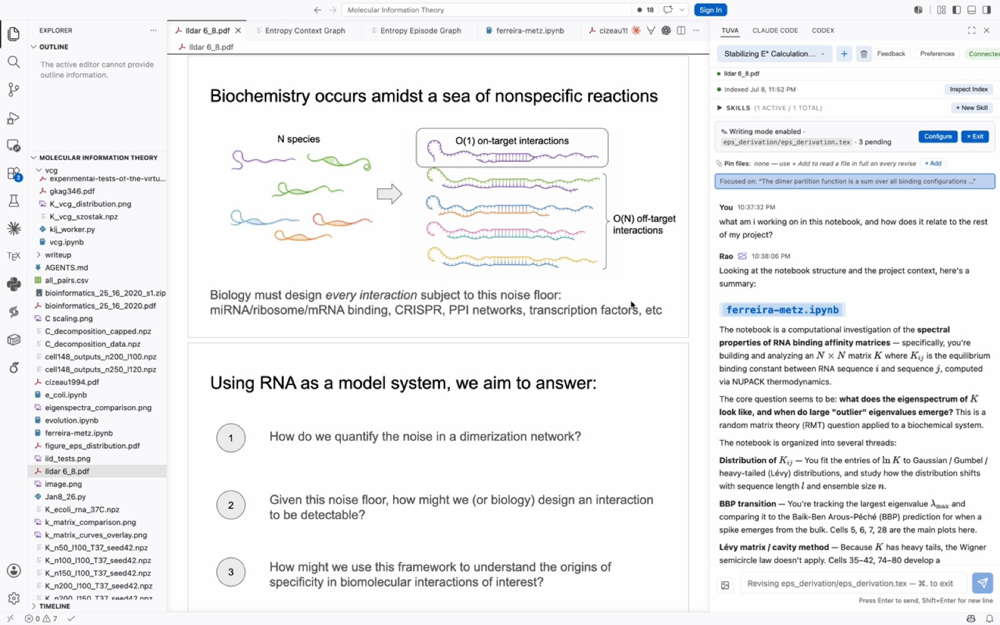

Give your AI the whole project.
Rao builds a research memory from your code, notebooks, papers, docs, and past agent sessions, then gives Claude and your other agents the context they need for each task.
Works on top of Claude Code · Claude · Codex · Cursor
Your AI only knows what you hand it.
That means the chat and the repo. Most of the decisions behind a research project are made somewhere else, so the agent never sees them.
- The chatWhatever you remembered to paste
- The repoThe code, but not the reasons behind it
- NotebooksWhich run worked, and which didn't
- PapersThe method you're following
- Past agent sessionsWhat you settled on last week
- Shared docsThe plan everyone agreed to
- SpreadsheetsSample logs, parameters
- Other reposThe lab's shared tooling
One knowledge base for the whole project.
Each source feeds one research graph that keeps updating. That gives Rao a specific understanding of your project, and it gives your agents exactly the information they need.
| Code | Python, R, TypeScript, SQL, and shell scripts, including how files depend on each other |
|---|---|
| Notebooks | Cells and outputs, chunked by cell |
| Papers & documents | PDFs, LaTeX, Markdown, and Word files, searchable down to the section |
| Datasets | Schemas for CSV, Parquet, and Excel files. Raw data stays on your machine. |
| Agent sessions | Decisions and results from your Claude Code, Codex, and Rao sessions |
| Google Docs | Protocols, plans, and drafts |
|---|---|
| Google Sheets | Sample logs, run parameters, and results tables |
| GitHub | Repositories, issues, and pull requests |
| Notion | Pages you choose, synced into the project and searched with everything else |
Papers chosen for the questions you're working on.
The digest agent reads the open questions in your research memory, searches for new papers on each one, and suggests only those that clearly matter to your work. Each suggestion explains why.
Hierarchical Gaussian-process priors for population receptive field estimation
Last week · Posterior decoding of magnitude from parietal maps
| 01Reads | The open questions in your research memory. A new project starts from topics in its files. |
|---|---|
| 02Searches | New papers from Crossref, OpenAlex, and the web, skipping anything you've already seen |
| 03Filters | Applies a strict relevance bar. Usually one paper a week, and none if nothing qualifies. |
| 04Tracks | The authors, journals, preprint servers, and fields you choose to follow |
| 05Feedback | Mark each suggestion as useful or not |
| 06Delivers | In the app, as a desktop notification, or as an optional weekly email |
One project context, shared by every agent.
Start agents from Rao, pick them up in any tool, and give each one the same picture of your project.
Start agents with context already loaded
Start Claude Code or Codex from Rao with the project context attached. Every session is listed in one place.
Switch tools without starting over
Claude Code, Codex, Cursor, and Claude Desktop all connect to the same research memory through one MCP server.
Bring a new lab member up to speed
Anyone new can ask why the project is set up the way it is and get answers that point back to the session, notebook, or paper.
Read papers in light of your own work
Compare a paper with your methods and results, and cite the exact section.
The same agent, with and without Rao.
An illustration: Claude Code gets the same prompt in the same repo, with and without access to Rao. The model doesn't change. What changes is what it can look up.
Prompt: Regenerate figure 3 for the revision.
grep "fig3" · read 14 files · read decode_fit.py
Reran plot_fig3.ipynb with the default config: smoothed pipeline, all 12 subjects. Figure 3 now shows group-mean decoding accuracy.
recent_decisions · project_state · get_paper_sections · read decode_fit.py
Reran decode_fit.py on the unsmoothed pipeline, which gave higher cvR²1. Sub-07 is excluded for motion, as decided in an earlier session2. The FDR threshold follows the methods paper3. A per-subject panel was added, per the revision plan4.
- 1 · Result, gp_prior_results.ipynb
- 2 · Decision, Codex session, Oct 2
- 3 · Paper, §2.4
- 4 · Notion, "Revision plan"

Get started.
Connect your sources, then connect your agent to Rao.
Add your project
Point Rao at a project folder and connect Google Docs, Sheets, GitHub, or Notion. Rao builds a graph of how everything relates.
Plug Rao into your agent
One connection gives Claude Code, Claude, Codex, or Cursor the full project context.
Keep doing research
New sessions, runs, and papers keep updating the graph, so every agent works from current context.
Frequently asked questions.
Don't see yours? Drop us a line.
Separately, because Rao runs on external providers' models, your chat interactions pass through their APIs and are governed by their commercial data retention policies. Reach out to hello@tuva.ai for more details. If you work in a regulated environment — HIPAA, ITAR, IRB-restricted data, or under an industry NDA — check with your PI or management before using Rao to confirm compliance.
Want to try it out?
Join the waitlist and we'll reach out as we open up access.